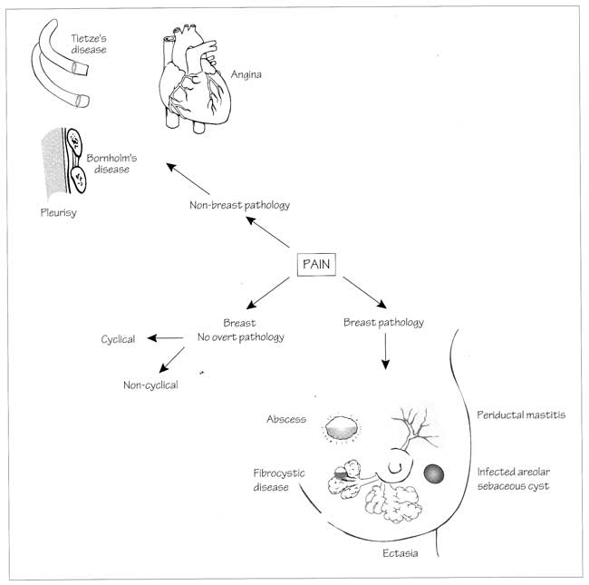

Mastalgia
DEFINITION
Pain in the breast, common in the premenopausal, which is associated
with hormonal cycling and which is only occasionally a marker of a
serious breast problem such as cancer.
D E A B M I M
EPIDEMIOLOGY
Common.
- peaks in mid-30s.
An unprompted symptom in only ~5% of cancers (Sabiston).
Risk
Factors
Starting HRT or OCP at menopause
- pain usually then subsides in three cycles or months.
Some medications associated with non-cyclical pains
- e.g. anti-depressants and OCP
D E A B M I M
AETIOLOGY
Cyclical
mastalgia
Normal hormonal influences on breast glandular elements
frequently produce cyclical mastalgia.
- especially in luteal phase of menstrual cycle
- abates with menstruation; a reassuring feature.
Non-cyclical
mastalgia
More likely non-breast or significant aetiology.
Consider a non-breast Problem
Musculoskeletal
- cervical radiculopathy
- costochondritis
- Tietze disease (swelling of cartilaginous articulations, pain at
costochondral joints)
- intercostal strain.
GI
- reflux/ dyspepsia
- gallstones
Cardiovascular
Pulmonary
Breast-related pathology
Breast cyst (usually mild)
Fibrocystic change
Ectasia
Mastitis
Cancer (uncommonly)

D E A B M I M
BIOLOGICAL BEHAVIOUR
Natural history
Often comes on suddenly from nowhere.
And can disappear as abruptly as it came.
D E A B M I M
MANIFESTATIONS
Symptoms
Usually presents when interfering with ADLs, sleep, sexual activity.
Determine if cyclical or non-cyclical.
- this will guide suspicion, examination and treatment.
Cyclical pain is commonly:
- dull, diffuse
- bilateral, symmetrical, UOQs.
Signs
Is there a mass?
- treat as per breast lump.
D E A
B M
I M
INVESTIGATIONS
As for a breast lump if
present.
Just pain?
If >30 or high-risk, should undergo mammography and USS.
Consider USS +/- mammogram if younger, particularly if risk factors.
D E A
B M
I M
MANAGEMENT
1. Exclude Cancer
2. Reassure
And advise pain often abates gradually over a few months without
treatment.
Helps reduce anxiety and so also pain.
85% of women will respond simply to this.
3. Pain chart
Track pain changes over the month.
This helps determine whether mastalgia is cyclical.
4. Conservative measures
Supportive bra
Fitted bra
Sports bra at night
5. Basic Medical Rx
Analgesia
Paracetamol & ibuprofen.
Evening Primrose Oil
Advise this for most mastalgia.
Given in adequate doses over 3 months
- will help 58% with cyclical pain and 38% with non-cyclical pain
(Sabiston)
- use 1.5g od then bd if not effective -- for 1 year
- but should respond in first 4 months if they are going to.
- 50% relapse after cessation, but symptoms often more tolerable.
6. Breast Specialist /
Endocrinologist
Territory
Side effects are significant.
Anti-estrogens
Very rarely required.
E.g. 10 mg/day tamoxifen
- from day 15-25 of menstrual cycle
- provided relief in 75% of 297 pts ( Sabistan)
For extreme end of spectrum pts.
Danazol
Synthetic androgen
- decreases ovarian function
- 100-400mg/day in two divided daily doses for 4-6mo
Only for those with intractable symptoms.
Bromocriptine
Long-acting dopaminergic drug
- suppresses prolactin
- 5-7.5mg/day in 2.5mg divided doses for 3-6mo
Only in those with intractable symptoms
No evidence for (Sabiston)
- eliminating caffeine
- vitamin supplements
D E A
B M
I M
REFERENCES
B&L 23rd.
Sabiston 17th.
Cameron 10th